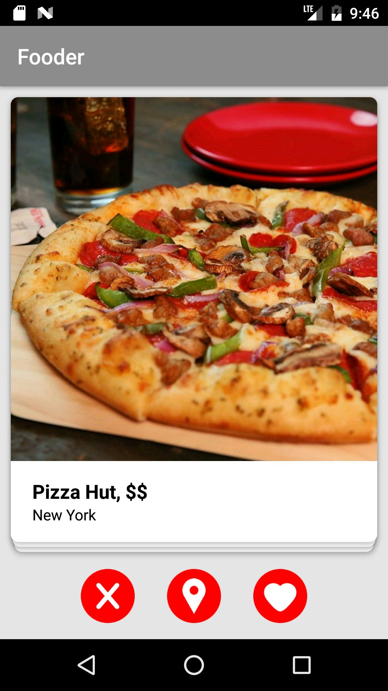
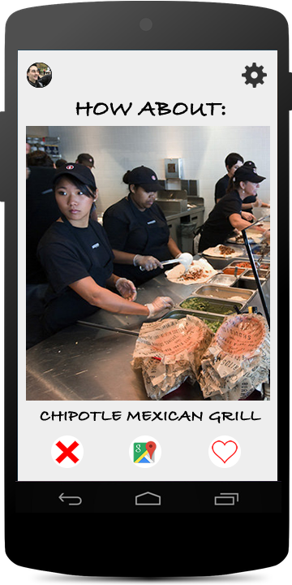
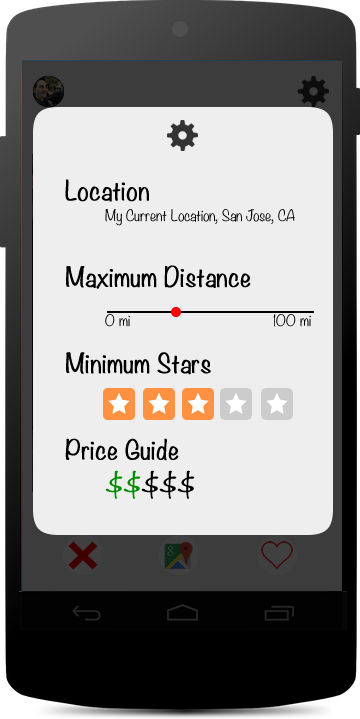
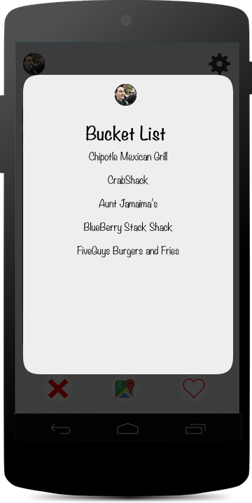

Tinder, but it's food.
Fooder is an Android app, so it can't run in your browser. Here's what it was instead.








The idea
"What do you want to eat?" "I don't know." Fooder turns that into a game of swipes. It finds restaurants near you and shows them one card at a time: swipe left (or tap ✕) to pass, swipe right (or tap ♥) to save it to your bucket list, or tap the pin to open it in Google Maps and go right now.
How it worked
- Sign in with your Google account.
- Pick how far you'll go (up to 20 miles), a star rating and which prices, $ to $$$$.
- Fooder searches Yelp around your phone's location (San José State's campus if it can't get one) and deals the results as swipeable cards with a photo, price and distance.
- Every ♥ is saved to your bucket list in a Firebase database, so it's still there next time you sign in.
My part
A team of four built it: Alex, Brendan, Jason and me. I was a co-lead programmer and the team's graphic designer: the logo, the app icon and the concept art are mine, and I built the sign-in page, Google Sign-In through Firebase.
Built with
- Java
- Android Studio
- Yelp Fusion API
- Retrofit + OkHttp
- Firebase Auth
- Firebase Realtime Database
- Google Sign-In
- Google Maps
- Glide
- PlaceHolderView swipe cards
Left on the cutting board
- Chives, a little bot with a new place to try every day.
- TakeOut, which would match you with someone craving the same food for a food date.
- Facebook login, and a blacklist so a place you'd swiped away wouldn't come back.